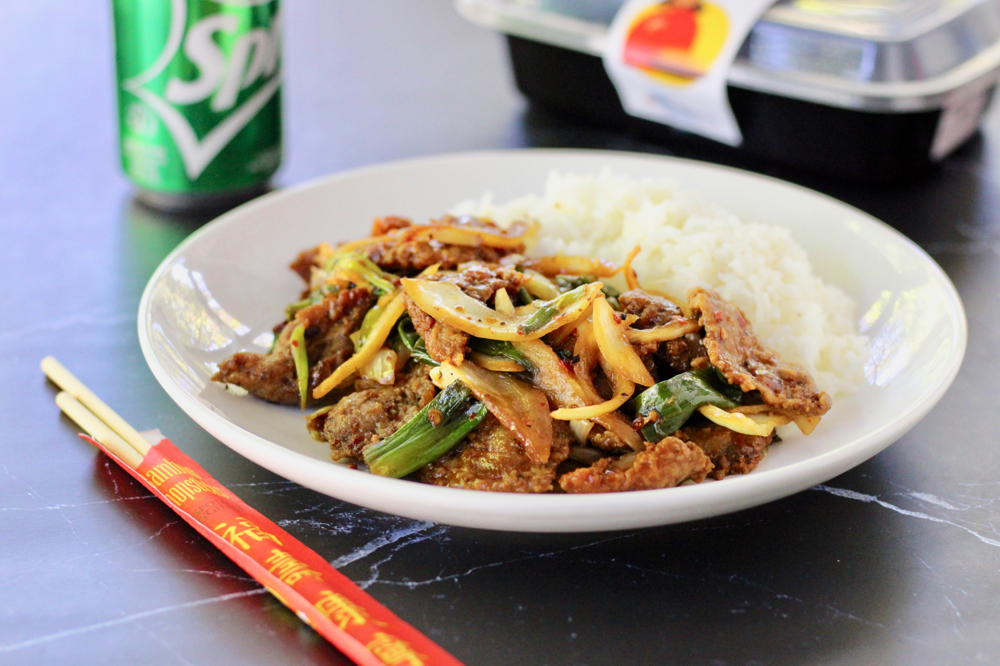
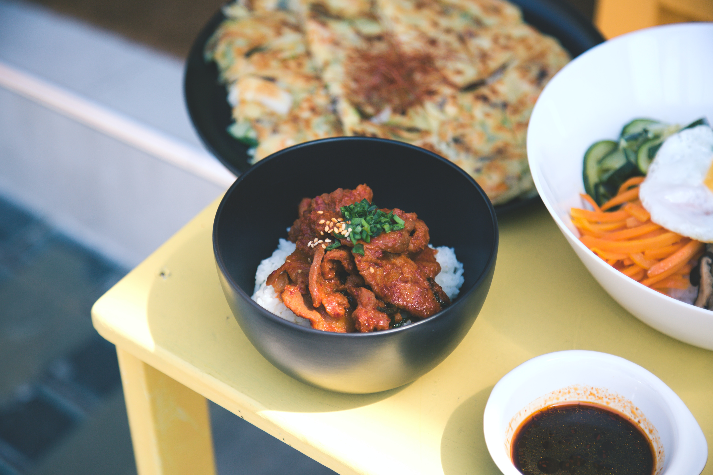
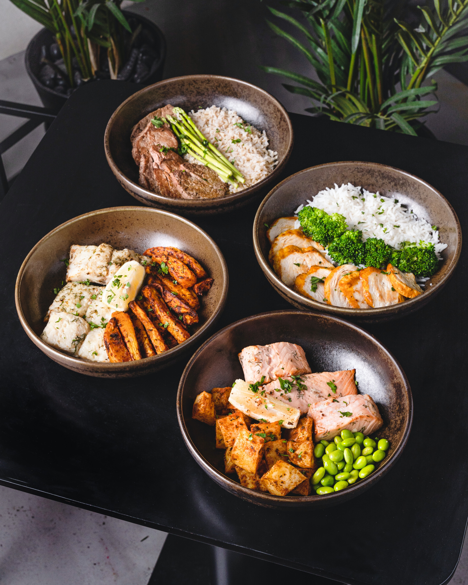

Our Food Gallery



Rice & Beef
Chinese rice and beef is a savory dish made with marinated beef, vegetables, and steamed rice stir-fried together with soy sauce.
Xiao-Bao
Xiao long bao is a Shanghai dish of steamed soup-filled buns with a delicate wheat flour wrapper.
Sour Soup
Sour soup, also known as hot and sour soup, is a Chinese soup made with vinegar, chili, and other ingredients.
Kung Pao
Kung Pao chicken is a spicy Sichuan dish made with diced chicken, peanuts, vegetables, and chili peppers.
Tonkatsu
Tonkatsu, a Japanese cuisine staple, consists of deep-fried pork cutlets coated in breadcrumbs.
Mapo Tofu
Mapo tofu is a spicy Sichuan dish made with tofu, ground pork, fermented beans, and Sichuan peppercorns.
Chefs Of Our Restaurant

Bilel 1

Bilel 2

Bilel 3